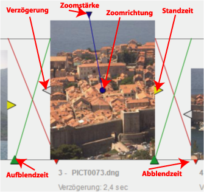

Diashow-Designer-Sichtfenster
Mit
der Diashow-Designer können Sie eine individuell
gestaltete Diashow erstellen. Dias können auf einem Storyboard abgelegt werden und
in Reihenfolge, Standzeit und Überblendverhalten individuell konfiguriert werden.
Der Diashow-Designer enthält im oberen Bereich das Storyboard.
Platzieren
Sie Bilder einfach auf das
Storyboard, indem Sie sie aus einer Galerie auf das Storyboard ziehen. Drücken Sie Strg,
wenn Sie die Bilder auf ein im Storyboard vorhandenes Bild ziehen, so
ersetzen die neuen Bilder das schon im Storyboard vorhandene Bild.
Andernfalls werden die neuen Bilder einfach zum Storyboard hinzugefügt.
Durch Ziehen innerhalb des Storyboards können Sie die Bildreihenfolge
jederzeit ändern. Bilder
können vom Storyboard entfernt werden, indem sie über den oberen Rand
des Sichtfensters gezogen werden.
Ein Rechtsklick auf ein Dia selektiert das zugehörige Bild in den anderen Sichtfenstern.
Jedes Dia ist mit vier Griffstücken ausgestattet:
- Das graue Griffstück am linken Rand ermöglicht es, die Verzögerung zwischen dem vorherigen Dia und dem aktuelle Dia anzupassen.
- Das gelbe Griffstück am rechten Rand ermöglicht es, die Standzeit des Dias festzulegen.
- Das blaue Griffstück
am oberen Rand legt die Stärke des Zoom während der Standzeit fest. Die
maximale Zoomstärke bewirkt ein Hereinzoomen um Faktor 2. Wenn die
Zoomstärke größer als Null ist, erscheint ein blauer Punkt im Bild. Dieser kann frei im Bild positioniert werden, um die Zoomrichtung festzulegen.
- Das Griffstück links auf der Grundlinie bestimmt die Aufblendzeit.
- Griffstück rechts auf der Grundlinie bestimmt die Ausblendzeit.

Der
Titel jedes Dias ist frei editierbar. Klicken
Sie einfach auf den Titelbereich.
Unter
dem Storyboard befindet sich eine Zeitachse. Mit einem Klick auf
die Zeitachse ist es möglich, den Startpunkt für die Show zu
ändern.
Sichtfenster Menü-Funktionen und Werkzeugtasten
- Abspielen (
 ). Startet die Diashow. Die Abspieleinheit ist interaktiv und erlaubt es, Bildeigenschaften
während der Wiedergabe ändern.
). Startet die Diashow. Die Abspieleinheit ist interaktiv und erlaubt es, Bildeigenschaften
während der Wiedergabe ändern.
- Diashow-Eigenschaften (
 ).
Ermöglicht die Bearbeitung der globalen Eigenschaften der Diashow (siehe unten).
).
Ermöglicht die Bearbeitung der globalen Eigenschaften der Diashow (siehe unten).
- Synchronisieren (
 ).
Schaltet den Synchronisationsmodus ein oder aus. In diesem Modus wird
das jeweils selektierte Bild in der aktuellen Kollektion angezeigt,
sofern vorhanden.
).
Schaltet den Synchronisationsmodus ein oder aus. In diesem Modus wird
das jeweils selektierte Bild in der aktuellen Kollektion angezeigt,
sofern vorhanden.
Navigation
Die
Navigation verläuft ähnlich wie beim
Hüllen-Sichtfenster. Sie
können den gesamten Bereich durch Ziehen mit der Maus nach rechts oder
links verschieben. Dabei darf der Cursor nicht über einem Dia stehen. Strg
beschleunigt die Bewegung. Mit den anderen Modifikationstasten (jedoch
nicht der Zoomtaste, siehe unten) können Sie das Verschieben des
gesamten Bereichs erzwingen, auch wenn der Cursor gerade über einem
Bild steht. Mit Umschalt+Strg kann die Beschränkung auf die horizontale Richtung aufgehoben werden und auch nach oben oder unten verschoben werden.
Sie
können den Anzeigenabstand anpassen (zoomen), indem Sie bei gedrückter Zoomtaste (ALT- oder UMSCHALT- bzw. rechter Maustaste je nach den Benutzervorgaben) und gedrückter Maustaste die Maus nach links oder rechts bewegen. Alternativ
können Sie das Mausrad verwenden, um zu zoomen.
ALT-Klick oder eine Klick auf die Legende öffnet den Dialog zum Bearbeiten der Diaeigenschaften.
Diashow-Eigenschaften
- Name. Der Name der Diaschau.
- Beschreibung. Name
und Beschreibung werden am Beginn der Diashow angezeigt.
- Vorschau-Bilder wo möglich verwenden.
Dies
Option kann bei langsamen Maschinen nützlich sein, wenn RAW-Dateien angezeigt werden sollen. Wenn das
Vorschau-Bild in der RAW-Datei groß genug ist, wird es als Dia verwendet.
Andernfalls,
oder wenn diese Option ausgeschaltet ist, wird die RAW-Datei in ein anzeigbares Dateiformat konvertiert. Dies
geschieht im Hintergrund während
das vorherige Dia angezeigt wird, jedoch könnte die Anzeige
verlangsamt werden oder zu Flackern beginnen.
- Dubletten übergehen. Die Option ist nur für Adhoc-Diaschauen verfügbar. Wenn markiert, werden doppelte Dias (gleichnamige Dias) übergangen.
- Sprachnotizen. Markieren Sie diese Option, wenn Sie angehängte Sprachnotizen während der Diashow abspielen möchten.
- Standard-Intervalle für Dias
- Dauer. Anzeigedauer, wenn ein Bild neu dem Storyboard hinzugefügt wird.
- Überblenden. Dauer des Ein- und Ausblendens, wenn ein Bild neu dem Storyboard
hinzugefügt wird.
- Titelanzeige. Anzeigezeit für alle Titel. Setzen
Sie diesen Wert auf 0, wenn Sie keine Titel angezeigen möchten.
- Inhalt. Wählen Sie aus, was in der Titelanzeige gezeigt werden soll: Die Bildüberschrift, die lfd. Nr. des Dias oder beides.
Dia-Eigenschaften
Mit einem Klick auf die Legende eines Dias oder mit ALT-Klick auf den Bildbereich können die Dia-Eigenschaften in einem separaten Dialog bearbeitet werden.
Kontextmenü
Mit
einem rechten Klick auf ein Bild oder die Zeitachse wird das Kontextmenü aufgerufen. Folgende Funktionen stehen zur Verfügung:
- Zeitmarke setzen. Den aktuellen Beginn der Diashow in der Zeitachse setzen.
- Zu Bild springen. Zu einem von einer Liste ausgewählten Bild springen.
- Zu einem Abschnitt springen. Zu einem aus einer Liste ausgewählten Titeldia springen.
- Zur letzten Selektion springen. Springt zum zuletzt ausgewählten Bild.
- Zur Zeitmarke springen. Springt zur aktuellen Position der Zeitmarke.
- Im Vollbildmodus zeigen. Zeigt das Bild in voller Auflösung.
- Ändern. Das Bild kann bearbeitet oder rotiert werden.
- Löschen. Entfernt die selektierten Bilder aus der Austellung.
- Ausschneiden Entfernt die selektierten Bilder aus der Austellung, hät sie aber im der Applikationszwischenablage vorrätig.
- Einfügen Fügt die Bilder aus der Applikationszwischenablage an der Mausposition ein.
- Ordner zeigen. Bild im Systemordner zeigen.
- In Zeitlinie anzeigen. Bild in seiner Zeitlinienkollektion anzeigen.
- In Karte anzeigen. Aufnahmeort im Kartensichtfenster anzeigen (nur für geo-codierte Bilder).
- Sprachnotiz abspielen. Spielt die dem Bild zugeordnete Sprachnotiz ab, falls vorhanden.
- Titeldia erstellen. Ein neues Abschnittstiteldia erstellen.
Tipp
Ein bequemer Weg, eine Diashow zu erstellen, ist, mit einer
Adhoc-Diashow zu beginnen. Nach dem Abspielen besteht die Möglichkeit,
die Diashow unter einem Namen abzuspeichern. Anschließend kann diese
neue Diashow bearbeitet werden.